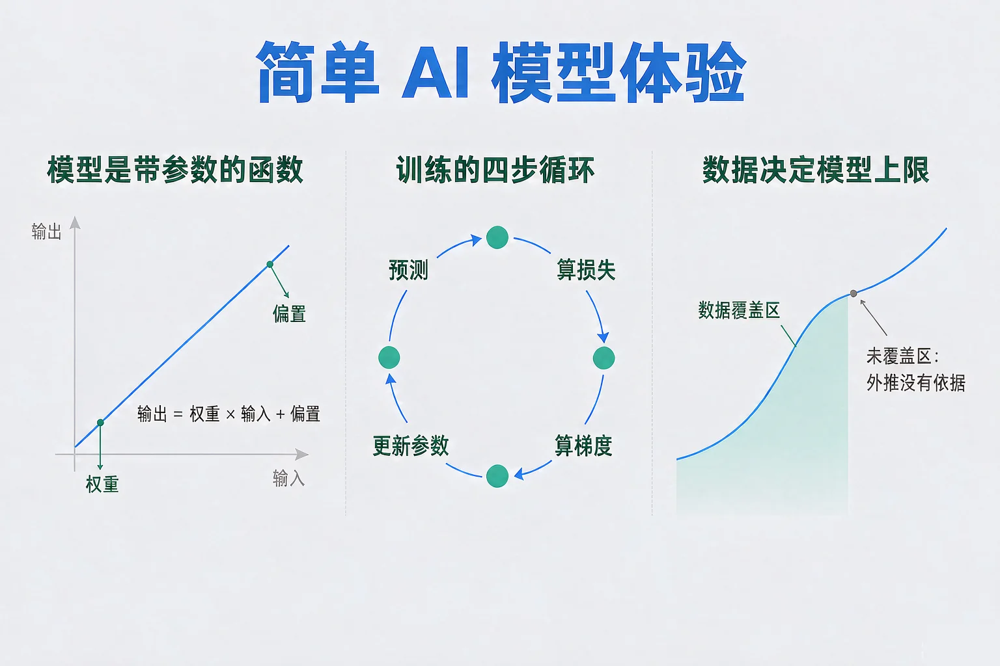
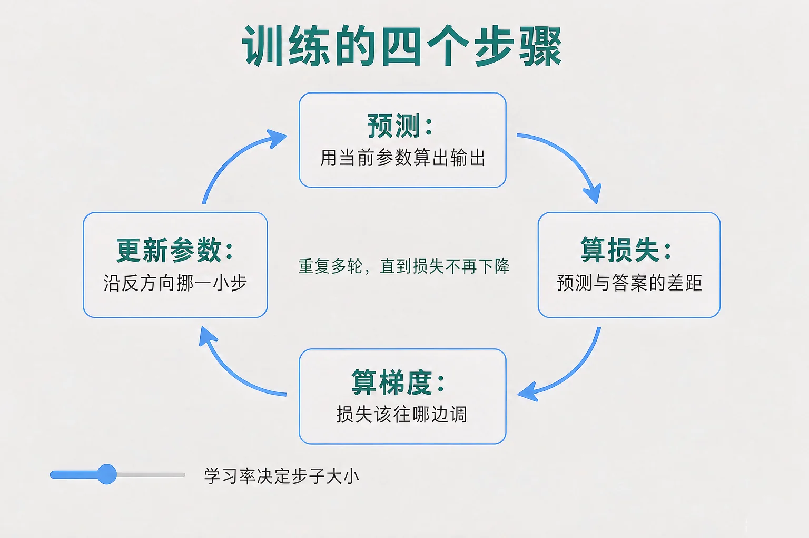
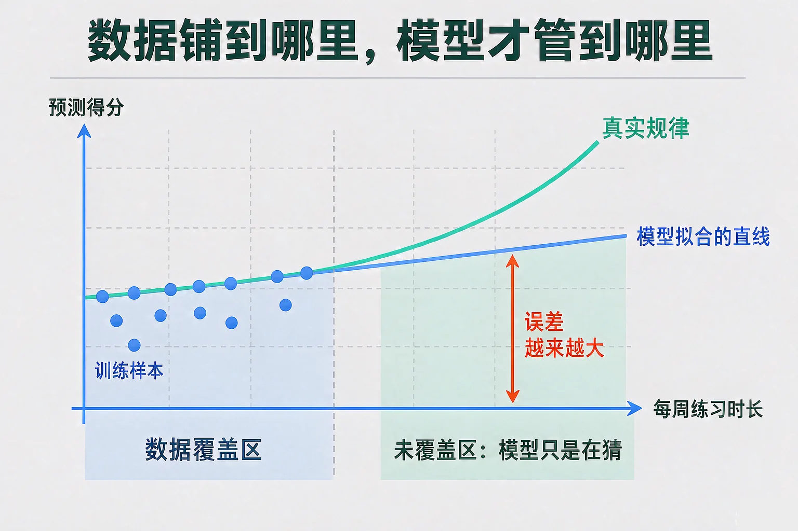

Gallery
v1.0.0 · skill v7.22.0
初中九年级 · 人工智能与智慧社会
同一个模型，在自己班很准，换一个班就失灵——是哪一环没到位？

选一个你真正好奇的问题，后面的实验都会围着它转。
选择或输入后，这节课会围绕你的问题展开。
先凭直觉选一个，选完立刻看到解释——错了也没关系，正好知道要重点听哪里。
1. 训练一个模型时，参数（权重和偏置）是怎么定下来的？
训练是一套固定流程：预测、算损失、算梯度、更新参数，重复进行。错因提醒：常见错误是误认为「人得靠感觉去调参数」——人设定的是学习率这类超参数，参数本身是流程自己调出来的。
2. 学习率这个量在训练中的作用是：
学习率乘在梯度上，控制步长；轮次控制走多少步，两者是两件事。错因提醒：容易搞混的是把学习率和训练轮次当成一个东西——步子大小和步数要分开调。
3. 某模型在训练数据上损失已经降到很低，但换一批新数据误差很大。最合理的判断是：
训练误差小、测试误差大，是过拟合的典型表现。错因提醒：许多同学误认为「训练损失越低越好」——继续训练只会把噪声记得更牢。
为什么要学这一课？你已经见过不少会「认图」「会预测」的应用，也知道了它们的规则是从数据里学出来的。但「从数据里学」这句话太笼统了，所以我们要把它拆到可以看见的量：参数、损失、梯度、学习率。
在这节课里，模型就是一个带参数的函数：y = w × x + b。w 叫权重，b 叫偏置，合起来叫参数。训练不是人去猜参数，而是用固定的四步循环，把参数逐步调到损失最小的位置。

🔍 深层理解 换个角度再看一遍这件事，看看能不能说出背后的原理。
看见它：四步循环里没有任何一步需要人来做判断，全部是可以写成公式、交给程序重复执行的机械动作。这正是它能自动化的原因。
拆开它：训练结束后真正留下来的东西只有 w 和 b 这两个数。所谓「模型」，在部署时往往就是这几个参数加上固定的计算结构。
迁移它：「先量出差距，再朝着差距变小的方向调整」这个思路，也是人练技能时的常见路径：反馈越准，调整越有效。
拖动学习率，按「训练 10 轮」或打开连续训练，盯住 w、b、损失这三个数怎么变。损失曲线用对数刻度，否则前几轮的大数值会把后面全压平。
参数调好了，是不是就万事大吉？不是。参数的每一个取值都是从训练数据里推出来的，所以数据本身有三个绕不开的限制。
覆盖范围
只见过 0 到 4 小时的记录，对 10 小时的情形只能外推，没有依据。
数据量
样本太少，参数会被个别样本带着跑，换一批数据结果就变。
数据质量
一条录错的记录会把参数和损失一起带偏，而且不会报错。
还有一条最容易忽略：训练损失小不等于模型好。模型可能只是把每条训练样本上那点随机抖动也记住了（这叫过拟合）。要判断它有没有真的学到规律，必须留出一批没参与训练的新数据来测——这种做法叫留出法，在留出数据上算出的误差叫测试误差。

最容易踩的是把训练误差当成模型的能力：损失一路下降就以为模型在变好，其实它可能正在把噪声背下来。第二个常见错误是误认为模型能预测任何输入——输入落在训练数据没覆盖的区间里，它的输出只是一条外推的直线。第三个是把噪声当成规律：真实数据天生带抖动，因此任何模型都不可能把损失压到零，那个下限由数据自身的抖动决定。
🔍 深层理解 换个角度再看一遍这件事，看看能不能说出背后的原理。
比较它：「参数是调出来的」和「上限是数据给的」这两件事要分开看：调参决定你能不能走到上限，数据决定上限在哪里。
迁移它：用没参与训练的数据检验结果，和「练习时见过的题不算检验，要看新题」是同一个道理。
拖动覆盖范围与数据抖动，盯住三个数字：覆盖区内误差、覆盖区外误差、区间最右端的预测值与真实值。
题目：某同学把学习率从 0.02 调到 0.05，训练 10 轮后损失从 163 变成了一千多，而且每一轮都比上一轮大。请分析原因并给出处置办法。
很多同学误认为「损失变大了，说明数据有问题或者代码写错了」，于是回头改数据、改结构。可这个现象有明确的成因，就在学习率这一个数上。另一处容易搞混的是把震荡和发散当成一回事：震荡是损失上下跳但总体还在低位，发散是损失持续变大、参数被推得越来越远——前者调小一点就能稳，后者必须停下来重训。
先凭直觉选一个，选完立刻看到解释——错了也没关系，正好知道要重点听哪里。
1. 下面哪句话是正确的？
参数（w、b）由训练循环调出来，学习率、轮次这些训练前设定、训练中不变的量叫超参数。错因提醒：常见错误是误认为「参数就是要靠人试出来的」——那正是训练循环要替你做的事。
2. 训练时损失在最近几轮一会儿降一会儿升，位置都在低位附近。最合理的处置是：
低位附近的上下跳动说明步子踩到了临界，缩小步长就能稳。错因提醒：容易搞混的是把震荡当发散——震荡总体还在低位，调小学习率即可，不必推倒重来。
3. 两个模型在同一批训练数据上训练，A 的训练误差 0.25，B 的训练误差 0.95。下面哪个判断最站得住脚？
训练误差小可能只是记住了训练数据里的抖动，必须用留出的新数据来测。错因提醒：许多同学误认为「一个训练误差就能代表模型好坏」——记忆和泛化是两种能力，要分开量。
拖动模型阶数和训练数据量，每一组设置都会重新拟合一次参数，并在训练数据和一批没参与训练的新数据上分别测误差。
写下来，说给同桌听：为什么「训练误差很小」不能说明模型好？请用「记忆」和「泛化」这两个词把你的理由说完整。
先凭直觉选一个，选完立刻看到解释——错了也没关系，正好知道要重点听哪里。
1. 某小组的模型在训练数据上损失降到了 0.4，在一批新数据上却是 3.2。下一步最该做的是：
训练误差低而测试误差高出好几倍，是过拟合的信号，处置方向是降低复杂度或补数据。错因提醒：常见错误是误认为「再训练久一点就好」——继续训练只会把训练数据里的抖动记得更牢。
2. 一个用「每周练习时长」预测得分的模型，训练数据全部来自每天练习超过 3 小时的同学。用它去预测每天只练习 20 分钟的同学，最可能出现的情况是：
模型只对它见过的输入分布负责，训练数据没有覆盖的区间只能外推。错因提醒：许多同学误认为「模型能预测任何输入」——外推的结论没有数据支撑，不能直接拿来用。
3. 训练时你把学习率调得很大，损失从 160 涨到 900，又涨到 5000。最恰当的处置是：
损失持续变大、参数被越推越远就是发散，根因在步长。错因提醒：容易搞混的是把发散当成数据问题——先看学习率这个超参数，再谈数据。
回到开头那个小组：他们的模型并没有坏。真正的问题是训练数据只覆盖了自己班的情况，而他们又只看了训练损失这一个数字。把样本铺到真正要用的范围上、留出一批新数据来测测试误差，同一个模型就能派上用场。
给别人讲一遍：请用「参数、损失、学习率、测试误差」这四个词，把一次完整的训练过程讲清楚，并说明哪一步最容易出问题。
三层练习，做完第一、二层就算通关；第三层留给愿意继续探索的同学。
⭐ 基础巩固（必做）
⭐⭐ 能力应用（必做）
⭐⭐⭐ 迁移挑战（选做）
左边是学它之前要先会的，右边是学会之后可以继续探索的，下面是同一领域的伙伴知识。
图谱正在加载：首次进入需下载知识索引（约 1–3 秒），加载完成后本行会自动消失。